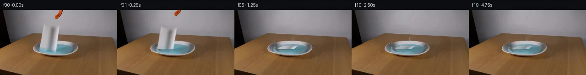

![首帧]()

Round 00
2026-11-05T14:07:25.960033+00:00像素候选变化代码 +288/−0inspection 更新
pixels def1c3efc8fe301a · code e6188ebff1723df5
查看本轮 generate.py 真实 diff
--- previous/generate.py
+++ current/generate.py
@@ -0,0 +1,288 @@
+"""Source-based local pixel animation. No external models or rendering engines."""
+from pathlib import Path
+import json
+import math
+import cv2
+import numpy as np
+from PIL import Image, ImageDraw
+from scipy.ndimage import gaussian_filter
+from artifact_io import save
+
+ROOT = Path(__file__).resolve().parent
+H, W, S = 144, 256, 4
+A = np.array(Image.open(ROOT / 'first_frame.png').convert('RGB'), dtype=np.uint8)
+Y, X = np.mgrid[:H, :W].astype(np.float32)
+RNG = np.random.default_rng(129)
+
+
+def polygon_mask(points, feather=0.35):
+ m = np.zeros((H*S, W*S), np.uint8)
+ cv2.fillPoly(m, [np.round(np.array(points)*S).astype(np.int32)], 255)
+ m = cv2.resize(m.astype(np.float32)/255, (W,H), interpolation=cv2.INTER_AREA)
+ return gaussian_filter(m, feather) if feather else m
+
+
+# Initial towel silhouette, including the antialiased edges. Reflection is separate.
+towel_outline = [(95,28.7),(99,30.8),(108,34.3),(118,34.5),
+ (127,32.0),(131,34.5),(130,42),(128,52),
+ (126,62),(124.5,73),(124,83),(122,87.8),
+ (118,88),(113,85.5),(106,84),(96,84),(89,83.5),
+ (86.8,81),(88.4,72),(89.3,64),(91,56),(92,48),(93,39)]
+towel_mask = polygon_mask(towel_outline, 0.35)
+# A slightly wider removal mask also eliminates the blurred stationary silhouette.
+remove_towel = np.clip(gaussian_filter(towel_mask, .58)*1.35, 0, 1)
+reflection_mask = polygon_mask([(86,81),(103,81),(125,83),(127,89),
+ (122,94),(109,93.5),(95,92),(86,88)], .8)
+# Restrict reconstruction below the towel to its actual cyan reflection footprint.
+reflection_mask *= np.clip((Y-82)/3,0,1) * np.clip((95-Y)/2,0,1)
+remove = np.maximum(remove_towel, reflection_mask)
+
+# Reconstruct the hidden gray wall and table from same-row, local neighbors.
+bg = A.astype(np.float32).copy()
+wall = np.zeros_like(bg)
+for y in range(H):
+ lx, rx = (88, 134) if y < 51 else (86, 139)
+ if y <= 50:
+ l = A[y,lx].astype(float)
+ r = A[y,rx].astype(float)
+ for x in range(84,136):
+ f=np.clip((x-lx)/(rx-lx),0,1)
+ wall[y,x]=l*(1-f)+r*f
+ elif y <= 55:
+ # Measured curved horizon hidden by the sheet: x90/y52 to x132/y54.
+ for x in range(84,136):
+ horizon=52.1+.043*(x-90)
+ f=np.clip((y-horizon+.65)/1.3,0,1)
+ gray=A[min(y,53),136].astype(float)
+ table=A[max(y,56),85].astype(float)*(1-(x-85)/55) + A[max(y,56),140].astype(float)*((x-85)/55)
+ wall[y,x]=gray*(1-f)+table*f
+ elif y < 68:
+ for x in range(84,136):
+ f=np.clip((x-86)/54,0,1)
+ smooth=A[y,86].astype(float)*(1-f)+A[y,140].astype(float)*f
+ # Texture residual borrowed from an uncovered neighboring table patch.
+ p=A[y,64+(x-84)%20].astype(float)
+ residual=p-cv2.GaussianBlur(A.astype(np.float32),(0,0),1.5)[y,64+(x-84)%20]
+ wall[y,x]=smooth+.55*residual
+ else:
+ wall[y]=A[y]
+
+# Continue the partially occluded left half of the dish using the visible right half.
+# Only pixels revealed by the towel/reflection mask are modified.
+for y in range(68,98):
+ for x in range(84,135):
+ sx=float(252-x)
+ sy=float(y + .018*(sx-x))
+ sample=cv2.getRectSubPix(A.astype(np.float32),(1,1),(sx,sy))[0,0]
+ blue=np.clip((sample[2]-sample[0]-12)/24,0,1)*np.clip((sample[1]-sample[0]-5)/20,0,1)
+ side_gain=blue*np.clip((128-x)/40,0,1)*np.array([24,25,26])
+ # Match the stronger, cooler light on the left of the liquid.
+ wall[y,x]=sample+side_gain
+bg = bg*(1-remove[...,None]) + wall*remove[...,None]
+
+# The orange-black fragment is near the upper frame boundary.
+rr,gg,bb=A.transpose(2,0,1).astype(float)
+tool_core=((rr-gg>24)|((rr<100)&(gg<100)&(bb<110))) & (X>=116)&(X<=139)&(Y<=20)
+tool_core[0,115:123]=True
+tool_mask=np.clip(gaussian_filter(tool_core.astype(float),.5)*1.45,0,1).astype(np.float32)
… diff truncated; 201 more lines …